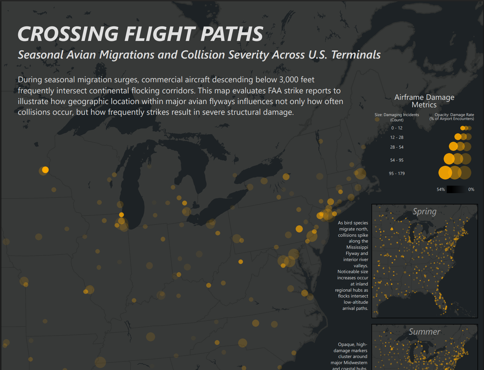
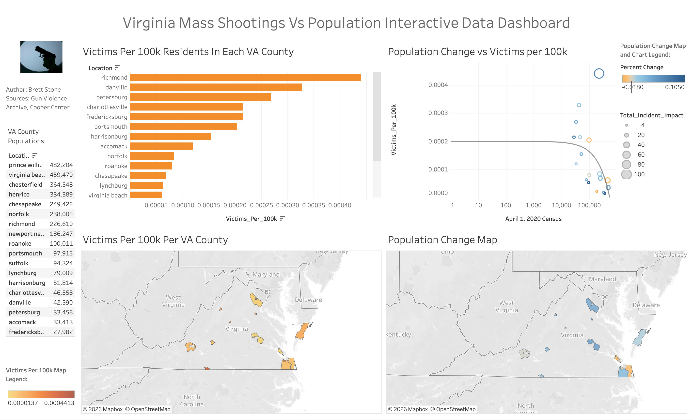
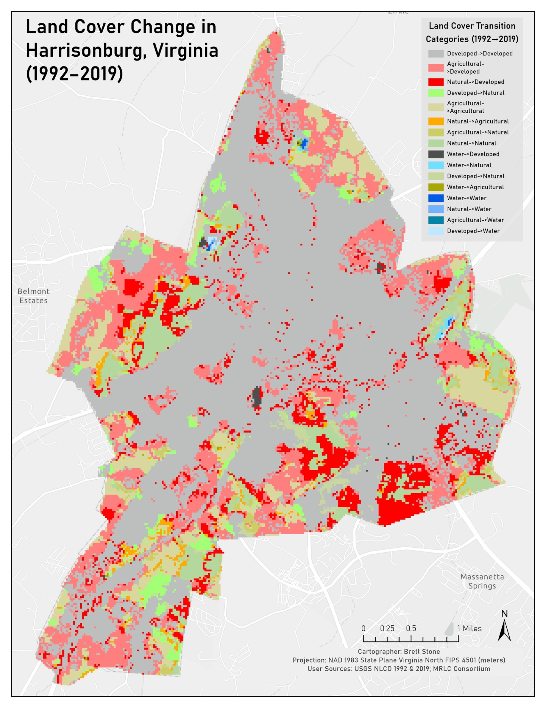

Cartographic Terrain & Relief Design
Custom elevation and terrain cartography emphasizing visual hierarchy, clean relief shading, and balanced layout.
Open image →
I am a senior double major in Intelligence Analysis and Geography (Applied GIS Concentration) at James Madison University graduating in May 2027. Through research with NGA Tearline, internship work with the Virginia Department of Environmental Quality (VADEQ), and serving as a GIS Teaching Assistant, I build spatial and intelligence products using ArcGIS Pro, Affinity, Python, and SQL.
My career goals center on geospatial intelligence, cartographic production, targeting or analytic methodology, and spatial problem-solving where clear visual communication supports real-world decisions. Outside of maps and analysis, I am drawn to travel and adventure, outdoor exploration, animals of all sorts, and new experiences.
Custom elevation and terrain cartography emphasizing visual hierarchy, clean relief shading, and balanced layout.
Open image →
Spatial analysis of seasonal bird migrations, low-altitude terminal approaches below 3,000 feet, and FAA strike damage metrics across U.S. terminals.
Open map →Spatial analysis of 9,437 FAA and NTSB incident records (2023–2026), 3x3 damage-casualty bivariate mapping, and ASDE-X/ASSC radar coverage.
Open StoryMap →Examines how satellite imagery, GIS, remote sensing, and cartography—alongside SST bleaching and marine pollution data—support coral reef monitoring and mitigation.
Open Research Paper →
Interactive five-view dashboard comparing Virginia county shooting rates per 100k residents, total incident impact, and Census population change.
Open Interactive Dashboard →
Spatial analysis and cartographic mapping of land cover transitions, schema reconciliation, and change matrix patterns across 1992 and 2011 datasets.
Open map →James Madison University double major with experience as an NGA Tearline Research Analyst, VADEQ GIS intern, and GIS Teaching Assistant.